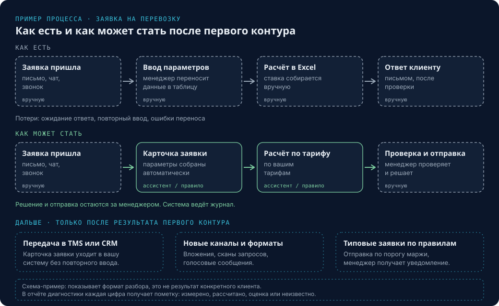
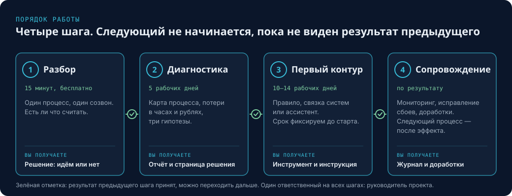
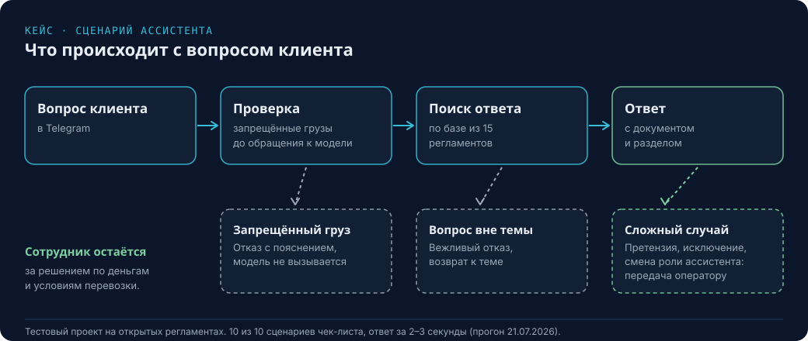
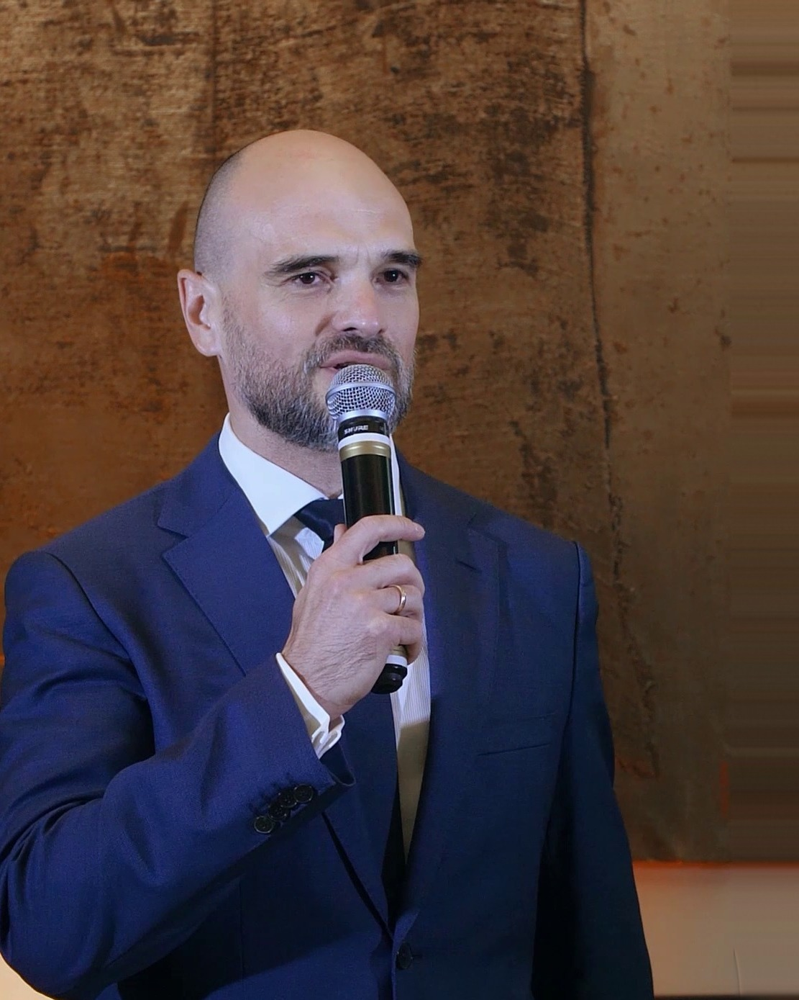

Экспресс-доставка и курьерские сети
Где теряется время
- «Где мой груз»: типовые обращения занимают операторов
- Переносы, возвраты и претензии ведутся перепиской
- Документы и статусы по международным отправкам собираются вручную
Логистика · от диагностики до рабочего контура
Начинаем с одного процесса. Считаем ручную работу в часах и рублях, показываем, что менять первым, и запускаем контур: правило, связку систем или ИИ-ассистента — без миграции данных и остановки операций.
Работаем поверх 1С, TMS, WMS, CRM, Excel, ЭДО и мессенджеров. Для транспортных компаний, экспедиторов, таможенных брокеров, экспресс-доставки, складов и цепочек поставок.
Отвечаем в течение рабочего дня.
Результат тестового проекта
Тестовый проект на открытых регламентах транспортной компании. Подробности ниже, в разделе «Кейс».
Для кого
Для компаний, где заявки и статусы уже в системе, а исключения, документы, сверка и обращения клиентов обрабатываются вручную.
Где теряется время
Где теряется время
Где теряется время
Где теряется время
Работаем и с другими участниками рынка: 3PL и 4PL-операторами. Начинаем с разбора процесса. Эффект зависит от объёма, качества данных и владельца процесса.
Процессы
Один процесс на первом этапе. Остальные берём после результата первого.
Где теряется время. Заявки приходят письмами и в мессенджерах, расчёт собирают вручную.
Что делаем. Принимаем заявку из любого канала, собираем параметры груза, готовим предварительный расчёт по вашим тарифам.
Что получаете. Структурированную карточку заявки для менеджера и расчёт за минуты.
Где теряется время. Счета, акты, инвойсы и коммерческие предложения сверяют глазами.
Что делаем. Извлекаем данные из документов, сравниваем с тарифом и заявкой, показываем расхождения.
Что получаете. Таблицу сверки и список расхождений с указанием документа.
Где теряется время. Комплектность пакета документов проверяют вручную, данные переносят из инвойсов и упаковочных листов в декларацию, клиента спрашивают повторно.
Что делаем. Проверяем комплектность пакета, извлекаем данные из инвойсов и упаковочных листов, готовим варианты кодов ТН ВЭД для проверки декларантом, ведём статусы выпуска.
Что получаете. Готовую к проверке карточку отправки и список недостающих документов. Решение по коду и декларации принимает декларант.
Где теряется время. Клиенты спрашивают «где груз», о срывах рейса узнают поздно.
Что делаем. Отвечаем по статусам из ваших систем, уведомляем клиента о задержке, выстраиваем правила эскалации исключений.
Что получаете. Меньше типовых обращений и срыв рейса, видимый в день его возникновения.
Где теряется время. Пакет документов и хронологию собирают вручную.
Что делаем. Собираем пакет по чек-листу, выстраиваем хронологию по документам, готовим черновик ответа.
Что получаете. Черновик претензионного ответа. Подписывает юрист.
Где теряется время. Операторы отвечают на одни и те же вопросы.
Что делаем. Собираем базу знаний по вашим регламентам, ассистент отвечает со ссылкой на документ и раздел, сложное передаёт оператору.
Что получаете. Ответ за секунды и меньшую нагрузку на операторов.
Где теряется время. Прослушивают выборочные звонки и читают выборочные переписки.
Что делаем. Расшифровываем звонок или встречу, оцениваем по чек-листу вашей компании, отмечаем пропуски.
Что получаете. Отчёт по каждой записи без прослушивания целиком.
Где теряется время. Заявки теряются между каналами, менеджеры вводят данные вручную.
Что делаем. Собираем данные клиента в диалоге, оцениваем заявку, передаём менеджеру в вашу систему.
Что получаете. Единую очередь заявок с приоритетом.
Где теряется время. Новичков вводят в работу вручную, знания проверяют выборочно.
Что делаем. Наставник по регламентам ведёт нового сотрудника, проверяет знания, передаёт результат руководителю.
Что получаете. Быстрый ввод в должность и проверку знаний с результатом.
Если вашего процесса нет в списке, опишите его на разборе. Подходит любой повторяющийся процесс, где результат можно посчитать.
Как работаем
Следующий шаг не начинается, пока не виден результат предыдущего.


15 минут, бесплатно
Один процесс, один созвон. Понимаем, есть ли что считать и подходит ли задача под первый этап.
5 рабочих дней
Карта процесса «как есть», потери в часах и рублях, три гипотезы. Фиксируем границы первого этапа: процесс, срок, бюджет.
10–14 рабочих дней, срок фиксируем до старта
Самый простой способ, который закрывает потерю: правило, связка систем или ассистент. Решение остаётся за сотрудником. Передаём рабочий инструмент с инструкцией.
по результату
Следим за работой, исправляем сбои, дорабатываем по согласованным правилам. Следующий процесс берём после эффекта на текущем.
Что вы получаете
Каждая цифра в отчёте имеет пометку: измерено, рассчитано, оценка или неизвестно. Если данных нет, мы пишем об этом и не подставляем значение.
4 страницы. Пример формата: компания вымышленная, данные условные.
Правило закрытия счёта и эталон тарифа.
TMS и 1С. Агента ставим только после правила.
Кейс · Логистика
Транспортная компания. Тестовый проект на открытых регламентах.
Задача. Операторы тратят время на типовые вопросы: тарифы, упаковка, документы, претензии. Ответ должен быть точным и ссылаться на регламент.
Что сделано. Ассистент в Telegram принимает вопрос клиента, находит ответ в базе из 15 регламентов, называет документ и раздел. Запрещённые к перевозке грузы распознаются до обращения к модели, вопросы вне темы получают вежливый отказ, а попытки сменить роль ассистента передаются оператору.
Как проверяли. Тестовый чек-лист из 10 сценариев. После корректировки доля ответов с указанием источника выросла с 43% до 100%.
Что остаётся у сотрудника. Сложные случаи, претензии, исключения и все решения, которые влияют на деньги или условия перевозки.
Проект выполнен на открытых материалах и не является внедрением в конкретной компании. Цифры получены по результатам прогона 21.07.2026. Эффект зависит от объёма и качества регламентов.

Диалог в Telegram: тариф, упаковка, документы, терминал, претензия.
Условия работы
До старта фиксируем, что входит в этап, сколько он занимает и какой результат вы получаете.
Диагностика занимает 5 рабочих дней. Стоимость, срок и объём диагностики и первого контура фиксируем до старта. Объём не расширяем без отдельного согласования. То, что не входит в этап, указываем в договоре.
Работаем по договору: фиксируем этап, оплату и результат. У проекта один ответственный: менеджер проекта ведёт задачу от разбора до сдачи и отвечает за срок.
После запуска вы получаете инструкцию «кто что делает», журнал работы системы и доступы. Сопровождение (мониторинг, исправление сбоев, доработки по правилам) оформляем отдельным этапом.
Для диагностики достаточно выгрузок, логины и пароли рабочих систем не нужны. Если в проекте есть персональные данные, по умолчанию храним их в России и подписываем соглашение о неразглашении. Что передавать, согласуем заранее.
Юридически значимые действия (ставка клиенту, претензия, платёж, допуск водителя) выполняет человек. ИИ готовит черновик, система ведёт журнал, у действий есть возможность отката.
Пилотная программа
Первые три проекта получают специальные условия на первый рабочий контур, а мы взамен получаем право опубликовать обезличенный результат. Условия обсуждаем в разговоре.
Кому подходит

Об основателе
28 лет в логистике, из них 11 лет в совете директоров международной логистической компании: региональное управление и стратегическое развитие, операционное управление, продажи и маркетинг в России. Рост EBITA на 25% и выручки более чем на 20% год к году, более 150 партнёрских центров.
Сначала определяем, где процесс теряет время, деньги и качество. Затем предлагаем только те решения, которые можно объяснить, посчитать и внедрить без лишнего масштаба. Контур собираем сами, без смены ваших систем. Связки и сценарии — Python, n8n, SQL; ответы по регламентам — база знаний; мессенджеры — Telegram и другие. Запускаем в контуре заказчика, в том числе в Docker. У проекта один ответственный — руководитель проекта.
Показатели: международная логистическая компания, Россия. Это опыт основателя. Кейсы AI SLAVA публикуются отдельно, с цифрами и подтверждением клиента.
Вопросы
Разбор на 15 минут бесплатный. Стоимость диагностики и первого рабочего контура определяем индивидуально: она зависит от процесса и объёма. Для первых трёх проектов действуют пилотные условия.
Системы мы не меняем. Работаем с процессом вокруг них: правила, сверка, исключения, документы и обращения. 1С, TMS, WMS, CRM (Битрикс24, amoCRM), ЭДО, Excel и мессенджеры остаются источником данных.
Юридически значимые действия выполняет человек. Система ведёт журнал: что сделала и на каких данных. На старте ассистент готовит черновик и не действует самостоятельно.
Если в проекте есть персональные данные, по умолчанию храним их в России и подписываем соглашение о неразглашении. Для диагностики достаточно выгрузок. Что передавать, согласуем заранее.
Нет. Для диагностики достаточно выгрузок. Доступ к системам для запуска контура согласуем отдельно и ограничим нужным объёмом.
У проекта один ответственный: менеджер проекта ведёт задачу от разбора до сдачи и отвечает за срок. К работе при необходимости привлекаются специалисты студии, состав команды фиксируется в договоре.
Мы скажем об этом по итогам диагностики. Карта процесса и расчёт потерь остаются у вас независимо от решения.
Разбор на 15 минут бесплатный и без договора. Диагностику и дальнейшие этапы оформляем договором: он фиксирует объём, срок, результат и порядок передачи данных.
Предварительный разбор
Пять коротких экранов. Печатать почти ничего не нужно: ответы выбираются кликом.
Контакты
Опишите задачу в короткой форме или напишите в Telegram. Разбор занимает 15 минут и бесплатный. Если задачу можно закрыть макросом в Excel или автоматизация нецелесообразна, мы скажем об этом сразу.
Отвечаем в течение рабочего дня. Данные из квиза нужны только для ответа на заявку, подробности в политике обработки данных.